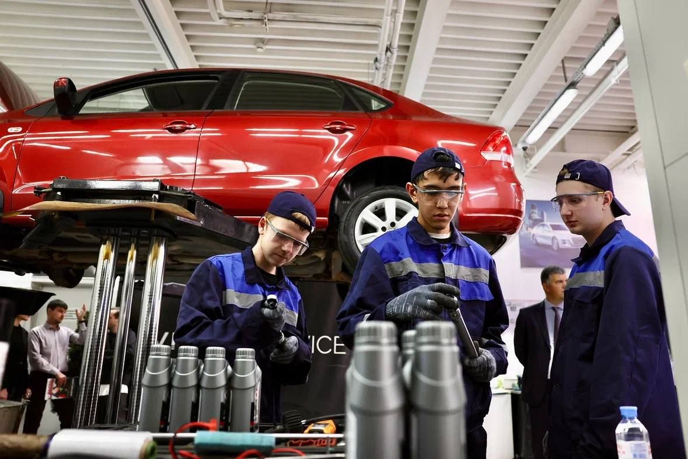
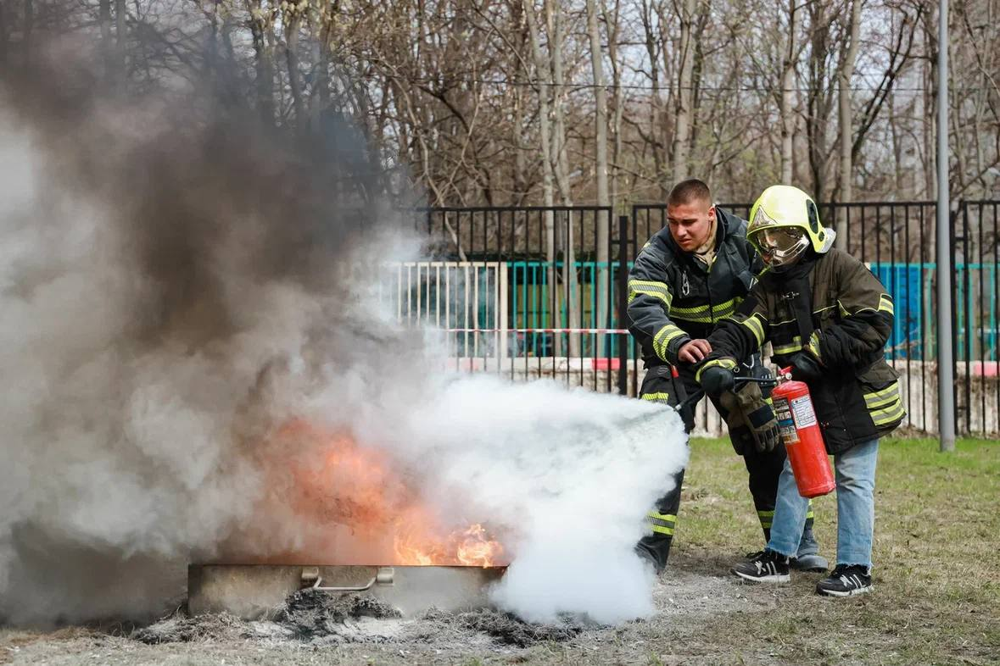

Москвач • Новости Москвы
@moscowach
Москвач • Новости Москвы
@moscowach
С 24 октября по 1 ноября в Москве пройдёт фестиваль колледжей Город профессий.


🎓 С 24 октября по 1 ноября в Москве пройдёт фестиваль колледжей «Город профессий».
В 43 образовательных организациях подготовили более 300 мероприятий для школьников. Участники смогут попробовать себя в разных специальностях: от программирования и робототехники до медицины, дизайна, кулинарии и автосервиса.
Вход свободный, но нужна предварительная регистрация.
В 43 образовательных организациях подготовили более 300 мероприятий для школьников. Участники смогут попробовать себя в разных специальностях: от программирования и робототехники до медицины, дизайна, кулинарии и автосервиса.
Вход свободный, но нужна предварительная регистрация.